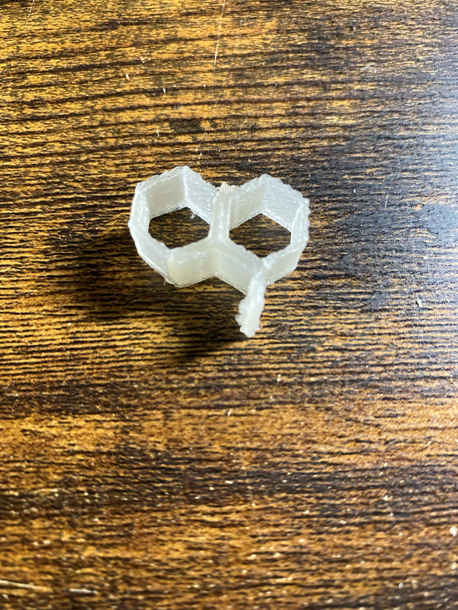
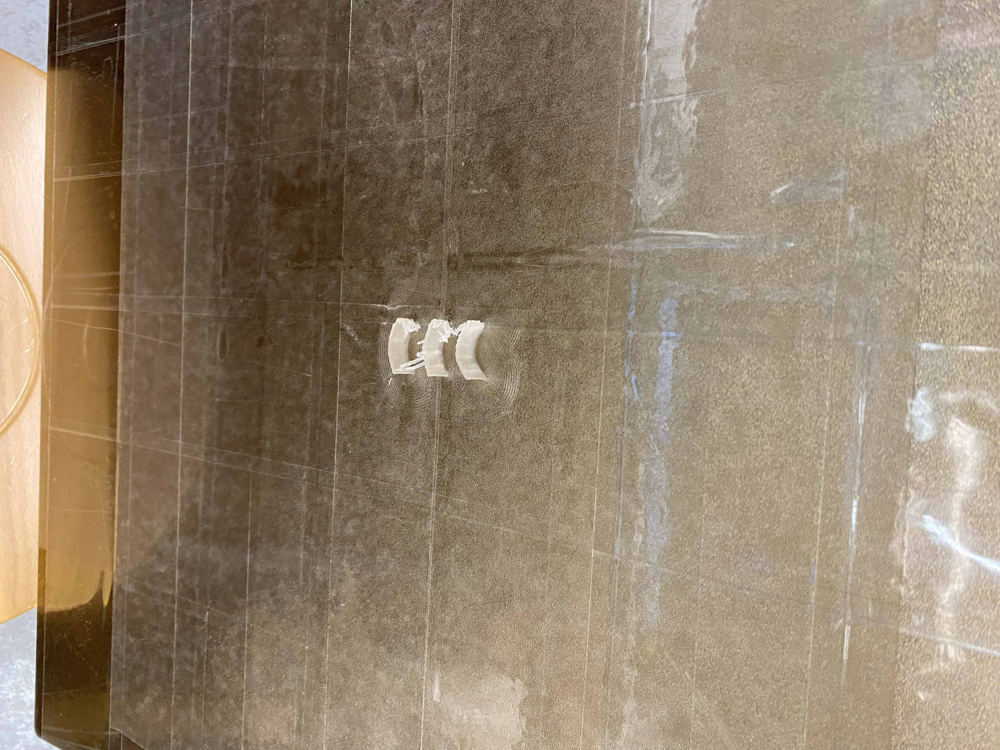

１．本記事について
今回使うことになる3DプリンターやPPの特性について、やっていて気付いたことをまとめていく
２．3Dプリンターについて
１．想像以上に細かな印刷ができる 5/31
小さな正六角形を印刷してみたが、想定以上に精度がよい
多少表面に粗があったり、糸を引いたりもするが基本的な部分の構造はしっかり出てくれる
細かいものでも割と想定通りに印刷できるかも？
２．部品の複数印刷について 5/31
今回小さな板を複数同時に印刷したところ、少し作りが荒くなったり、
板と板の恥がくっついたりした。
実験用と割り切ったり、外から見えない部分の部品なら複数同時印刷の方が時間がかからないのでよい
しかし、見た目に関わる重要部分なら一つ一つ分けて印刷したほうが良いと思う。
小さな正六角形を印刷してみたが、想定以上に精度がよい
多少表面に粗があったり、糸を引いたりもするが基本的な部分の構造はしっかり出てくれる
細かいものでも割と想定通りに印刷できるかも？

２．部品の複数印刷について 5/31
今回小さな板を複数同時に印刷したところ、少し作りが荒くなったり、
板と板の恥がくっついたりした。
実験用と割り切ったり、外から見えない部分の部品なら複数同時印刷の方が時間がかからないのでよい
しかし、見た目に関わる重要部分なら一つ一つ分けて印刷したほうが良いと思う。

３．PPについて
１．柔軟性が高い 5/31
PPを薄い板として印刷してみたところ、かなり柔軟性がある。
PLAのように強い力に対して割れるのではなく、変形するため壊れにくい
力をかけすぎるとクリアファイルのように曲がり跡がついて、元に戻らなくなってしまうが
基本的には変形してもおおよそ元の形に戻る。
印刷の層の厚さが一層であれば特に柔軟性が発揮されやすい
ただし、二層以上の場合ほんの少し曲がりはするもののほとんど変形しない（とても頑丈）
なので柔軟性を生かして動きをつけたいなら一層（一ミリ）で印刷することお勧めする
２．反りについて 5/31
PPの素材は反りやすいといわれていたが、実際のところは大きさが１CM程度ならあまり目立たなかった
構造上反りにくい形もありそうなので、設計時に工夫した形にするか、
後から組み立てる形にする方が良いように思う。
PPを薄い板として印刷してみたところ、かなり柔軟性がある。
PLAのように強い力に対して割れるのではなく、変形するため壊れにくい
力をかけすぎるとクリアファイルのように曲がり跡がついて、元に戻らなくなってしまうが
基本的には変形してもおおよそ元の形に戻る。
印刷の層の厚さが一層であれば特に柔軟性が発揮されやすい
ただし、二層以上の場合ほんの少し曲がりはするもののほとんど変形しない（とても頑丈）
なので柔軟性を生かして動きをつけたいなら一層（一ミリ）で印刷することお勧めする
２．反りについて 5/31
PPの素材は反りやすいといわれていたが、実際のところは大きさが１CM程度ならあまり目立たなかった
構造上反りにくい形もありそうなので、設計時に工夫した形にするか、
後から組み立てる形にする方が良いように思う。